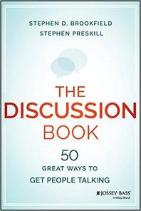

<div class="center"> <h1>Late Night Thoughts<br>on Listening to Ike Quebec</h1> <p><img src="../../files/talks/codebender-logo.svg" alt="Third Bit logo" width="20%" /></p> <h2>Greg Wilson</h2> <p>2018-05-10</p> <p><img src="../../files/talks/cc-by.svg" width="20%" alt="CC-BY" /></p> </div> --- <!-- I almost didn't come to this conference. When the invitation arrived, I looked at it and thought, "What the hell do I have left to say?" You've all heard both of my jokes, and many of you tell my stories better than I do—or at least, more factually. I could talk about the history of Software Carpentry, and how we got to where we are today… --> ## The Paper <div class="center"> </div> <!-- …but I wrote up my part of that a couple of years ago… --> --- ## The Team <div class="center"> </div> <!-- …and what's happened since is someone else's story to tell. I could talk about the Carpentries' plans for the future… --> --- ## Lessons Learned (?) <div class="center"> </div> <!-- …but most of you don't have a high enough security clearance for that. After rambling and ranting and arguing and teaching to you and with you for so many years, I felt like I had nothing left, so I wrote an apologetic email, deleted it, wrote another, deleted that, and then said "yes", picked a title more or less at random, and waited for inspiration to strike. --> --- ## To Do <p>2018-12-17: write Carpentry talk.</p> <p>2018-01-01: write Carpentry talk.</p> <p>2018-02-01: write! Carpentry! talk!</p> <!-- Hands up if you've ever been here. It wasn't until my brother died in March that I realized I did still have something to say that some of you wouldn't have heard yet. --> --- ## The End <div class="center"> </div> <!-- For every beginning there has to be an ending, but we don't talk about endings much. There are thousands of books on Amazon about how to start a business; there's only a handful about how to hand one on, and even fewer about how to leave one gracefully. Sooner or later, you will wind up the project you're working on or leave your job or maybe get out of academia altogether to do something else, and that's what I'd like to start with today. --> --- ## Safety Kitten <div class="center"> </div> <!-- Y'all are looking pretty serious right now, so here's a picture of some kittens. --> --- ## The Beginning <div class="center"> </div> <div class="center"> <img src="../../files/swc/lanl-1998-09.jpg" width="60%"> </div> <!-- In the twenty years since Brent and I taught the first two Software Carpentry workshop in Los Alamos, I have left six jobs and wound down half again as many extra-curricular projects. If there's a mistake I could have made and didn't, I don't know what it was. If I could send email back in time, this is what I'd tell my younger self. --> --- ## 1. Be sure you mean it. <div class="center"> </div> <!-- Letting go will be hard on you, but <em>not</em> letting go will be even harder on your successors, so be sure you're actually going to do it. --> --- ## 2. Do it when others think it's time. <div class="center"> </div> <!-- You are the last person to realize when you're too tired to be coding. You will often be the last person to realize that you ought to be moving on, so ask people and pay attention to what they say. --> --- ## 3. Explain what, when, and why. <div class="center"> </div> <!-- Tell people that you're leaving and what the succession plan is as soon as possible (which in practice means "as soon as you think you won't have to revise what you have said publicly"). --> --- ## 4. Don't pick a successor yourself. <div class="center"> </div> <!-- You may have strong opinions about who should succeed you, but you should still check those opinions with someone more objective. --> --- ## 5. Train them before you go. <div class="center"> <img src="../../files/talks/late-night/oklahoma.jpg" width="80%"> </div> <!-- Share tasks with your successor for a few days or weeks: they will get to see how things actually work, and you'll discover things you would otherwise forget to tell them. Go on holiday for a week and leave your successor temporarily in charge. You'll discover even more things you would otherwise forget to pass on. --> --- ## 6. When you leave, leave. <div class="center"> </div> <!-- It may be tempting to continue to have a role in the organization, but that usually leads to confusion, since people are used to looking to you for answers. --> --- ## 7. Have some fun before you go. <div class="center"> </div> <!-- Don't just slog your way to the end and turn out the lights: take that back burner project you've been dreaming about and give it a shot. --> --- ## 8. Reflect on what you learned. <div class="center"> </div> <!-- Whatever you have left will almost certainly not be the last thing you ever do. Take some time to think about what you could have done differently, write it down, and then move on: obsessing over only-ifs and might-have-beens won't help anyone. --> --- ## 9. Remember the good things too. <div class="center"> </div> <!-- Many people are uncomfortable being praised—so uncomfortable, in fact, that English doesn't actually have an antonym for "mistake". Thank the people who made what you did successful, and give yourself a little credit as well, even if you're Canadian. --> --- ## 10. Do something next. <div class="center"> </div> <!-- People who start things usually aren't good with idleness, and idleness tends not to be good for them, so when you leave, leave for something, even if it's something small. I didn't do any of these things as well as I should have when I left Software Carpentry, but this last one is the one I've been kicking myself for the most. The reason I got it wrong is that I fell back into some bad old patterns of thought. You see, academia doesn't care if something is useful—it cares if something is <em>new</em>. Like a lot of you, I internalized that in grad school without ever really questioning it. It's been <em>years</em> since I thought of myself as an academic, but I still often feel kind of embarrassed doing something that's been done before. I keep thinking I have to innovate. --> --- ## Inspiration <div class="center"> </div> <!-- The truth is, I never really have. I joke sometimes that I'm a thought scavenger, not a thought leader, but it's not really a joke. Some of the tools I teach are almost as old as me, and compared to some of you, I'm as old as dirt. The teaching practices that we use aren't new either—I mean, live coding is just teaching by demonstration, and cats do that with their kittens. And yeah, I do occasionally pick up something new… --> --- ## Git <div class="center"> </div> <!-- [pause for laughter] --> --- ## Variations <div class="center"> <img src="../../files/talks/swc-1998.gif" alt="Logo 1998" width="40%"> <img src="../../files/talks/swc-2004.gif" alt="Logo 2004" width="40%"> <br> <img src="../../files/talks/swc-2007.jpg" alt="Logo 2007" width="80%"> <br> </div> <!-- …but for years I measured myself by how much academically-digestible novelty I produced and found myself wanting. It wasn't until I got over that that I was able to give myself permission to work full time on something that was actually useful. --> --- ## Inspiration <div class="center"> <br> <br> </div> <!-- Which brings us to Ike Quebec. He was a jazz musician—tenor sax. He had a few hits in the 40s, but between a drug problem and changes in musical taste, he didn't record much in the 50s. In his last three years, though, he laid down some albums that I have listened to at least a couple of thousand times. They were one of the reasons I started playing the sax myself, and they are still on every single electronic device with a headphone jack that I own. Ike Quebec had this big, round, beautiful sound—it's like a hug from an old friend—but he wasn't an innovator. He never did anything melodically, harmonically, or rhythmically that other people hadn't done before, and because of that, he's not considered one of the greats. In jazz as in academia, it's not enough to do something wonderful: you have to do something <em>new</em>. --> --- ## It's OK… <div class="center"> </div> <!-- I'm 55 years old now, and I'm finally comfortable enough with who I am to say "the hell with that". I don't have to listen to new kinds of music if I don't want to. I'll happily watch <em>The Mummy</em> yet again because it's a fun, dumb movie. And I will teach people how to break their code up into functions and how to organize their data into usable tables and how to design a multiple choice question because even if it isn't new to me, it's new to them, and it makes the world a slightly better place. --> --- ## A New Beginning <div class="center"> </div> <!-- So what does playing the standards for a new audience actually look like? Well, over the past year or so, I've run a scaled-down one-day class on teaching based on Carpentry's instructor training for the staff from the Toronto Public Library, a couple of local companies, and people who volunteer with grassroots get-into-coding groups. The curriculum would be familiar to all of you—novice versus competent versus expert, seven plus or minus two, motivation and demotivation, recording yourself in groups of three… --> --- ## Inspiration <div class="center"> </div> <div class="row"> <div class="col-6 center"> <p>Spaced practice</p> <p>Retrieval practice</p> <p>Elaboration</p> </div> <div class="col-6 center"> <p>Interleaving</p> <p>Concrete examples</p> <p>Dual coding</p> </div> </div> <!-- …but I've mixed in some material on how to learn effectively and that's gone over really well. It's been a lot of fun, and I'm more convinced than ever that the Carpentries' biggest long-term impact won't be what we teach people about programming, but what we teach them about how to teach and learn together. --> --- ## More Inspiration <div class="center"> </div> <!-- I'm now talking to several groups that teach people how to be safe online, and I'm hoping that our methods—particularly the way we co-develop curriculum—will be useful to them, because right now, to be honest, I think that what they're doing is more important than version control. I don't have to tell you that the world and the internet are a lot scarier than they were two years ago. Just like a few basic coding skills can make you a more productive researcher, a few basic security practices—the digital equivalent of washing your hands before you eat or using a condom or keeping your shots up to date—can help you protect yourself from stalkers and trolls. --> --- ## More Inspiration <div class="row"> <div class="col-6"> <img src="../../files/talks/bpco.jpg" alt="Building Powerful Community Organizations" width="80%"> </div> <div class="col-6"> <br> </div> </div> <!-- I also recently organized a day of training on community organization for people in tech, and while there's a lot I'll do differently the next time around, it went well enough to convince me that it's worth pursuing. You might want to pursue it as well: you may not think you know enough to teach others, but you probably thought that about programming when you started volunteering for the Carpentries, and that's worked out OK, hasn't it? --> --- ## You've Been There <div class="center"> </div> <!-- [pause for laughter] --> --- ## Apple Pie <div class="center"> <img src="../../files/talks/late-night/carl-sagan.jpg" alt="Carl Sagan" width="60%"> <br> <p> <em>If you wish to make<br>an apple pie from scratch,<br>you must first invent the universe.</em> </p> </div> <div align="right"> <p>– Carl Sagan</p> </div> <!-- Going from coding workshops to community organization might seem like a hell of a leap, but the truth is, if we want the best of what we do to survive, we have to learn how to do it. If you want better research software, you have to change the way researchers are evaluated and rewarded so that they're given credit for their work. If you want open access, you have to change the way universities spend their journal subscription budgets, and if you want everyone to be treated fairly regardless of their race, their gender, their orientation, or the size of their alma mater's endowment, you need to be able to hold everyone accountable for harassment and discrimination. --> --- ## What Really Matters <div class="center"> <img src="../../files/talks/late-night/bury-the-chains.jpg" width="30%"> <img src="../../files/talks/late-night/victory.jpg" width="30%"> <p> <em>Nothing worth having<br>comes without some kind of fight.</em> </p> </div> <div align="right"> <p>– Bruce Cockburn</p> </div> <!-- In short, if you want things to get better, you need to be on the right committee and in the right room to make your argument or cast your vote when it matters. Valerie talked this morning about the way that individual action by targets doesn't fix systemic oppression and inequality. If you want to do that you need to learn how to get and use power, because inertia is one of the fundamental forces of nature, and no change for the better ever happened by itself. --> --- ## The Fight We're In <div class="center"> </div> <!-- I've been a pretty vocal critic of the modern university system, but I still think it's one of the crown jewels of human civilization. There are people though--more of them every day—who would tear it all down because silencing the messenger is easier than dealing with climate change or because they believe that anything that can be commoditized should be. We've been losing ground against them for the last few years. If we don't fight back—if we don't organize and collaborate and admit to ourselves that there are sides here and we need to pick one—then whether or not someone uses version control will be the least of our problems. --> --- ## You Need a Kitten <div class="center"> <img src="../../files/talks/late-night/kitten.jpg" alt="Kitten" width="80%"> </div> <!-- That's pretty serious stuff, so here's another kitten. --> --- ## Recommended Reading Barker et al: "What Influences CS Faculty to Adopt Teaching Practices?" 10.1145/2676723.2677282, 2015. Bauer et al: "An Introduction to Implementation Science for the Non-Specialist." 10.1186/s40359-015-0089-9, 2015. Borrego & Henderson: "Increasing the Use of Evidence-Based Teaching in STEM Higher Education: A Comparison of Eight Change Strategies." 10.1002/jee.20040, 2014. --- <br> <br> <br> <br> <div class="center"> <img src="../../files/talks/carpentries-logo.svg" alt="Carpentries logo" width="80%"> </div> <p class="center"> <em>Remember, you still have a lot of good times in front of you.</em> </p> <p class="right"> – Jeff Wilson </p> <!-- I said earlier that for every beginning there has to be an ending. That may feel pretty gloomy for a Wednesday afternoon, but keep in mind that every ending except the last one is a beginning as well. I hope that when you look back twenty years from now, you'll see the Carpentries as a beginning. I hope that you'll have taken what you learned about teaching and about working with other people for the greater good and done something wonderful with it. And above all, I hope that when it's late at night and you're listening to Ike Quebec (or whoever you listen to) you'll think it was worth it. I do. A lot of my stories aren't true. This has been a true story. Thank you all for listening. --> --- ## Thank You <div class="center"> <p><img src="../../files/talks/gvwilson.png" width="40%"></p> <p><a href="http://third-bit.com">Greg Wilson</a></p> <p><a href="mailto:gvwilson@third-bit.com">gvwilson@third-bit.com</a></p> <p><a href="http://third-bit.com/talks/late-night/">http://third-bit.com/talks/late-night/</a></p> </div> --- ## Reading <div class="center">  </div>